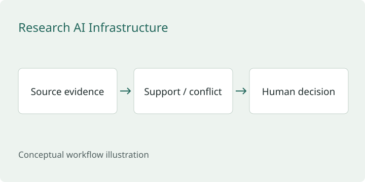

RAI — Evidence-Aware Research Infrastructure
Research software designed to make the evidence behind an answer easier to inspect.
Design focus: keep evidence, uncertainty, and authority separate.

The problem
A confident answer can hide missing support, conflicting sources, or a mistaken attribution. A recommendation can also be confused with authorization to take action.
My approach
Keep source support and contradictory observations visible. Preserve attribution and transformations where feasible, and keep analytical output separate from permission for external effects.
Why it matters
The same discipline is useful in security investigations: telemetry can disagree, a finding may need corroboration, and case notes must explain both the conclusion and its limits.
Scope
Public architecture summary of private research software. No private source is published, and no autonomous SOC effectiveness or production reliability is established here.
Read the full architecture summary on GitHub ↗
Related public example
This is an independent teaching example, separate from the private implementation.